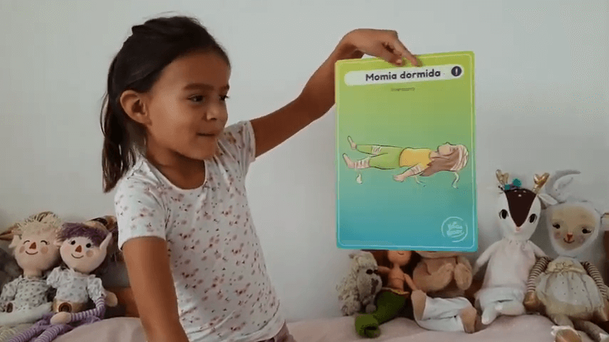

Hoy día queremos mostrarles una postura muy fácil y que todos amamos. ☆
Se trata de la postura de la Momia (Savasana), la cual nos aporta muchos beneficios entre los cuales están 🧘♀️🧘♂️:
- Calma el cerebro y ayuda a aliviar el estrés y la depresión leve.
- Relaja el cuerpo.
- Reduce el dolor de cabeza, la fatiga y el insomnio.
- Ayuda a reducir la presión arterial.
☆
Si te gusta este video, te invitamos a compartirlo con tus amigos y amigas ya que les servirá mucho en estos tiempos en que debemos quedarnos en casa.
☆
Un abrazo, Luz 💫
